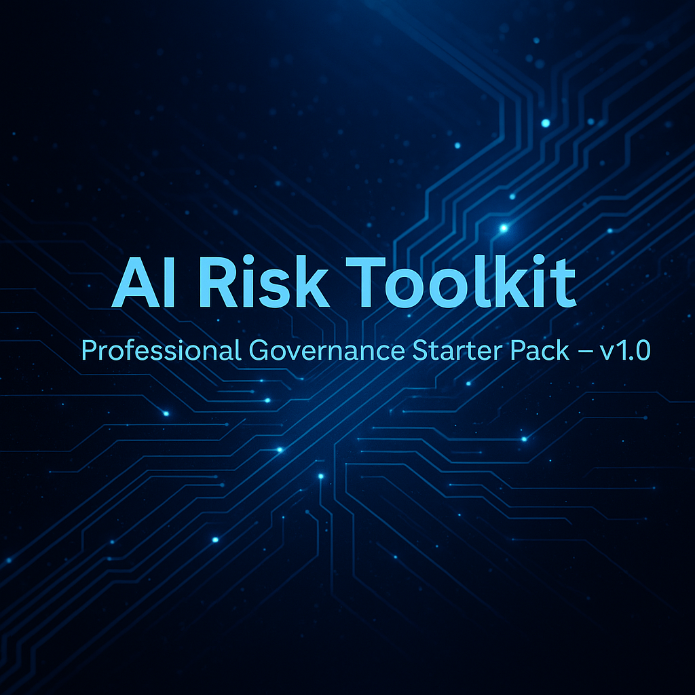

A practical, audit-ready AI governance starter pack designed for early-stage teams, students, and Responsible AI learners. Includes a Risk Register (Excel), governance documentation, helper sheets, and templates. Helps teams build structure, transparency, and accountability into AI systems from Day 1.
AI Risk Toolkit — Professional Governance Starter Pack (v1.0)
⭐ Overview
The AI Risk Toolkit is built for:
- Early-stage AI teams
- Founders adding AI features to products
- Compliance, risk & assurance practitioners learning AI governance
- Students and beginners exploring Responsible AI
This pack gives practical, plug-and-play governance tools without heavy enterprise complexity.
📦 What’s inside (v1.0)
- AI Risk Register (Excel) — Automated scoring (Likelihood × Impact), heatmap visualisation, pre-built dropdowns and analytics.
- Governance Guide (PDF) — Roles, responsibilities, lightweight workflows and checkpoints.
- Helper Sheet (XLSX) — Formulas, lookup tables, and user instructions.
- Templates — Policy & audit templates, stakeholder slide deck, and a prompt library.
- README & assets — Full documentation, cover banner, and release notes (v1.0).
📥 Download v1.0
Get the complete toolkit (all files included) from the official release:
Download v1.0.0 — GitHub Releases📸 Screenshots
Preview images (hero banner and Risk Register preview) are available inside the repository under /assets.
🧭 Roadmap (next)
- Responsible AI checklist
- Model card template
- Sample AI use-case intake form
- Smarter scoring automation & scripts
- Polished landing page & Gumroad integration
🔍 Evidence-Based AI Fact Verification Framework
Effective AI evaluation requires distinguishing verified facts from assumptions, opinions, and unsupported claims. This framework demonstrates the structured approach I follow when reviewing AI-generated information.
Verification Workflow
- Identify the exact factual claim.
- Separate facts from opinions or speculation.
- Locate authoritative and independent sources.
- Compare multiple reliable sources when necessary.
- Evaluate source credibility and publication date.
- Document evidence supporting the conclusion.
- Assign an evidence-based confidence level.
Preferred Sources
- Government websites
- Academic journals
- Official organizations
- Primary documentation
- Recognized international institutions
Confidence Levels
- High Confidence – Verified by multiple authoritative and independent sources with consistent evidence.
- Medium Confidence – Supported by at least one reliable source but would benefit from additional verification or corroboration.
- Low Confidence – Limited supporting evidence, conflicting sources, or unverifiable claims that require further investigation.
"AI-generated claims should only be accepted when supported by verifiable evidence from authoritative and independent sources."